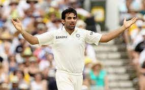
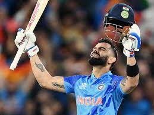

-
Mahendra Singh Dhoni

Mahendra Singh Dhoni is an Indian former international cricketer who was captain of the Indian national cricket team in limited-overs formats from 2007 to 2017 and in Test cricket from 2008 to 2014. He is also the current captain of CSK in the IPL.
-
Jaheer Khan
Bhuvneshwar Kumar Singh is an Indian international cricketer who plays for Uttar Pradesh in domestic first-class cricket and for Sunrisers Hyderabad in the Indian Premier League. He is the current captain of IPL franchise Sunrisers Hyderabad
-
Virat Kohli
Virat Kohli is an Indian international cricketer and former captain of the India national cricket team. Widely regarded as one of the greatest batsmen of all time, Kohli plays as a right-handed batsman for Royal Challengers Bangalore in the Indian Premier League and for Delhi in domestic Indian cricket.